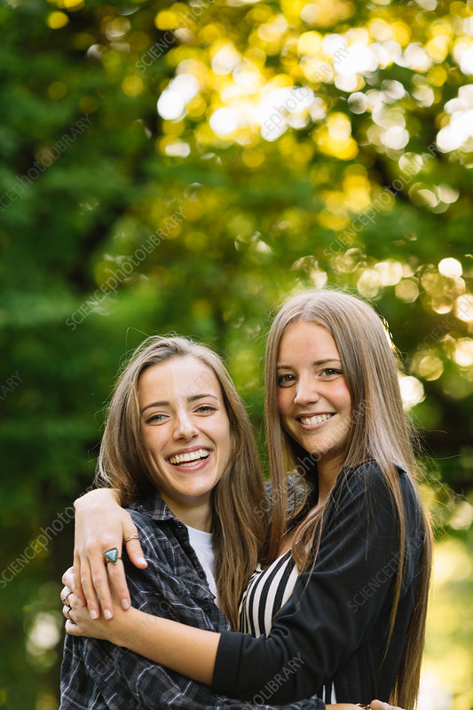

Our Story
Sweet Crumbs Bakery began as a small kitchen dream and has grown into a local favorite. Founded in 2012 by two lifelong friends with a shared love of baking, our bakery has always believed in quality over quantity. We bake everything from scratch daily using locally sourced ingredients and traditional methods.
Whether you're stopping by for your morning croissant or ordering a custom cake for a special celebration, our goal is to bring joy to your tastebuds and warmth to your heart. Thank you for being a part of our journey — we hope to see you in the shop soon!
Founders: Emily & Rachel
Est.: 2012 | Location: Sweetville, USA
